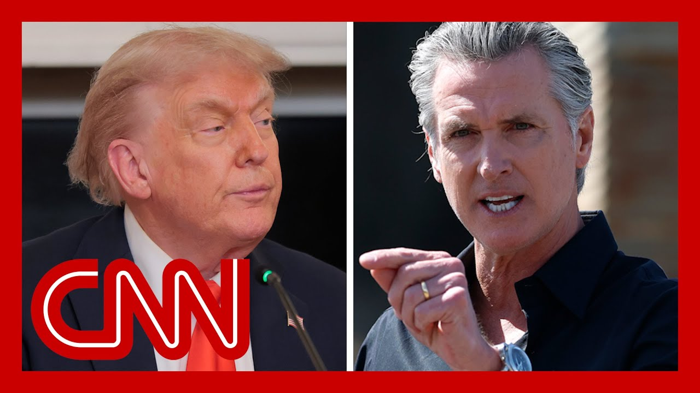

【特朗普建议边境沙皇应逮捕纽瑟姆】
Summary: California Governor Gavin Newsom plans to sue the Trump administration for deploying National Guard troops without his request, calling it unconstitutional, while Trump escalates tensions by suggesting Newsom's arrest, framing the conflict as a political battle over immigration enforcement.
摘要： 加州州长加文·纽瑟姆计划起诉特朗普政府未经其请求部署国民警卫队，称此举违宪，而特朗普则通过建议逮捕纽瑟姆加剧紧张局势，将冲突定性为围绕移民执法的政治斗争。

⏱️ Estimated Reading Time: 15 min
📚 六级生词 📚 雅思生词 📚 托福生词 📚 GRE生词 📚 视频里的生词
We are continuing to follow the latest out of Los Angeles, where California Governor Gavin Newsom is now saying that he will file a lawsuit against the Trump administration for deploying national Guard troops without his request.
我们继续关注洛杉矶的最新动态，加州州长加文·纽瑟姆表示将起诉特朗普政府未经其请求部署国民警卫队。
It's a move he is slamming as, quote, unconstitutional.
他抨击此举“违宪”。
Donald Trump has created the conditions you see on your TV tonight.
唐纳德·特朗普制造了你们今晚在电视上看到的局面。
He's exacerbated the conditions.
他加剧了这些状况。
He's, you know, lit the proverbial match.
他可以说是点燃了众所周知的导火索。
He's putting fuel on this fire.
他正在火上浇油。
Ever since he announced he was taking over the National Guard in illegal act, an immoral act, an unconstitutional act.
自从他宣布以非法、不道德且违宪的方式接管国民警卫队以来。
And for more on this, we're joined now by Axios senior politics reporter Marc Caputo.
关于更多细节，我们请到Axios资深政治记者马克·卡普托。
Mark, is the governor right?
马克，州长的说法对吗？
I don't know, I'm not a constitutional scholar nor expert in the courts will decide that issue.
我不知道，我不是宪法学者，法院将裁决这一问题。
So how has what we've seen this weekend from President Trump play?
那么，我们周末看到的特朗普总统的行动有何影响？
How has it played into the larger political agenda of his?
这如何服务于他的更大政治议程？
Well, I would imagine both Newsom and Trump have their own political agendas.
我认为纽瑟姆和特朗普都有各自的政治盘算。
And so far, the Trump White House, which is what I cover, thinks that this is the fight that they wanted.
就我所报道的特朗普白宫而言，他们认为这正是他们想要的斗争。
Not sure what Gavin Newsom thinks, but I doubt he's acting the way he is without thinking.
不确定纽瑟姆的想法，但他的行动显然经过深思熟虑。
It's a winning hand for him, for Trump.
这对特朗普来说是一手好牌。
He's having some trouble passing his major tax cut and immigration policy bill.
他在推动重大减税和移民政策法案时遇到困难。
And the news that came out of Los Angeles, his reaction to it and the Newsom's reaction to it is going to make it easier.
而洛杉矶事件的新闻及其双方反应将使其更容易推进。
And they're doing it now for Trump's White House to begin messaging two Republicans, saying you're either with Trump and with immigration enforcement and this bill or you're with Gavin Newsom and people waving Mexican flags in front of burning cars set aflame by rioters.
特朗普白宫正借此向共和党人传递信息：要么支持特朗普和移民执法及该法案，要么支持纽瑟姆和那些在暴徒点燃的燃烧车辆前挥舞墨西哥国旗的人。
That's the choice that you're going to start hearing the white House make publicly.
这就是白宫即将公开强调的选择。
They're making it privately now to Congress to get their legislation passed.
他们目前正私下向国会施压以通过立法。
I do think this is also a warning shot to other blue states.
我认为这也是对其他蓝州的警告。
It could be.
可能是这样。
I think it's more of a warning shot to other people who might protest.
我认为这更是对潜在抗议者的警告。
Now, I'm not in Los Angeles.
我本人不在洛杉矶。
I have not done any reporting down there on the ground.
我未在当地进行实地报道。
I am prisoner to what I've seen on the media and on social media, so I cannot say exactly what happened and what sparked this.
我只能依赖媒体和社交媒体的信息，因此无法确切说明事件起因。
But we do know that there are burning cars.
但我们确实看到燃烧的车辆。
There are rioters there.
现场有暴徒。
Now, that's not to say everyone is.
并非所有人都是暴徒。
And so if you see those images, you're going to probably see Donald Trump react that way, whether it's in a blue city, a red city, a purple city or state.
因此无论事发蓝州、红州还是摇摆州，看到这些画面都可能引发特朗普如此反应。
what are you hearing from your sources about what's next?
你的消息源透露接下来会如何发展？
And forgive me in advance if I have to interrupt.
若需打断请见谅。
So they are it's a big question because now that they have deployed the National Guard and they're waiting for all of them to actually get there and mobilize.
关键问题在于国民警卫队已部署但尚未完全到位。
there's a question about, is this going to be grounds for the Insurrection Act?
这是否会构成《叛乱法》的触发条件？
Up until this point, they have not gone there.
目前他们尚未走到那一步。
The president hasn't really gone there.
总统尚未真正采取行动。
Well, it would just give their troops far more authority under these federal powers than they have so far.
该法案将赋予联邦部队更大权力。
so that is a huge question going into the next few hours and even days, depending on how long these protests go.
未来数小时乃至数日的发展取决于抗议持续时间。
but up until this point, Dana, I think just to highlight some of everything, we've talked about sources who are on the phone constantly over the last few days, both within the department, homeland Security and with the white House.
过去几天我们持续联系国土安全部和白宫的消息源。
I mean, the way they were talking about this was a Portland type incident.
他们将此事与波特兰事件相提并论。
So that is another sort of moment to look back on how the how President Trump had dealt with that situation.
这让人回顾特朗普当年如何处理波特兰事件。
You were just talking about it, Jasmine, in 2020, in front of the Federal Building in Portland.
正如你提到的2020年波特兰联邦大楼前事件。
they are sending as many resources as they can, from all parts of the federal government.
联邦政府正调集所有可用资源。
And that is part of why they've also tapped the National Guard.
这也是动用国民警卫队的原因之一。
But the other part of this, Dana, is that I have been talking to sources who have said that there are Trump officials who have been wanting to engage the National Guard on immigration enforcement in a much more, deeper way.
另有消息称特朗普官员一直希望更深度动用国民警卫队参与移民执法。
And they just haven't figured out how to do it yet.
只是尚未找到实施方式。
And one of the sources I talked to this morning said, this could be the slippery slope.
今早有消息源称这可能成为滑坡效应的开端。
This could be where we start to see how they sort of pair that together.
我们或将看到他们如何结合这些手段。
because up until this point, there's obviously guardrails to that.
目前显然存在限制措施。
but that is something that they have been talking about, have been wanting to do more of.
但他们一直讨论并希望加强这方面行动。
They had asked the Department of Homeland Security, or rather, the other way around the perimeter.
他们要求国土安全部——或者说反过来——协助外围工作。
Homeland security had asked for a National Guard to help with immigration enforcement.
国土安全部曾要求国民警卫队协助移民执法。
So this is all heading in a certain direction.
这一切都朝着特定方向发展。
It's just about when they get it.
只待时机成熟。
And that's such an important point.
这一点至关重要。
This is the direction that they wanted to go.
这正是他们希望推进的方向。
Actually, let's listen to the president now.
现在让我们听总统发言。
So.
那么。
The.
这个。
Gavin Newsom is he's daring.
加文·纽瑟姆在挑衅。
Tom Homan becoming arresto.
汤姆·霍曼应该逮捕他。
Did he do it?
他行动了吗？
I would do it.
我会这么做。
Our job.
这是我们的职责。
I think it's great that Gavin likes the publicity, but I think would be the right thing.
纽瑟姆喜欢曝光很好，但逮捕他是正确之举。
He's done a terrible job looking.
他治理表现糟糕。
I like Gavin Newsom.
我喜欢纽瑟姆。
He's a nice guy, but he's grossly incompetent.
他是个好人，但极度无能。
Everybody knows all you have to do is look at the little railroad he's building.
看看他那个超预算百倍的铁路项目就知道了。
It's about 100 times over budget.
预算超支约百倍。
We're putting a flagpole up there under budget.
我们竖旗杆却低于预算。
I always do under here.
我一向如此。
What if you're wrong?
若你错了呢？
Tell tell you about these people causing all the problems.
说说那些制造问题的人。
You know.
你知道。
Oh, they are they are they people are trying to deport or are they professional?
他们是待驱逐对象还是职业煽动者？
I, the people that are causing the problem are professional agitators.
制造麻烦的是职业煽动者。
They're incorrect.
他们有问题。
They're bad people.
他们是坏人。
They should be in jail.
该被关进监狱。
Thank you.
谢谢。
Yes, yes, the president you go to use the restroom.
总统需要去洗手间。
It's like you cut him up.
像是打断他。
Priscilla, that word he used, they're insurrectionists that I can't imagine that that was an accident.
他用的"叛乱者"一词绝非偶然。
Because it seems as though that is the place that the white House is trying to get.
这似乎是白宫试图达到的定性。
And for the president, it's icing on the cake that he can do it in the state of California, because on a whole host of issues, he has had California, Gavin Newsom in particular in his sights.
对总统而言，能在加州实施更是锦上添花，因他长期将加州尤其是纽瑟姆视为目标。
The question he was asked, was about, Newsom daring Tom Homan to come in and arrest them, arrest Newsom.
他被问及纽瑟姆挑衅霍曼逮捕自己一事。
And the president responded, I would do it.
总统回应："我会这么做"。
And then he said, Gavin wants the publicity.
并称纽瑟姆想要曝光度。
This is a very serious word that's being thrown around now.
"叛乱者"是非常严重的指控。
Insurrection, that's a rebellion of the states or people in the states against the federal government.
叛乱指州或州民对抗联邦政府。
That is, not something to be trifled with.
绝非儿戏。
If, for example, to your point, the president were to, invoke the Insurrection Act, I think we would have yet another legal morass.
若总统援引《叛乱法》，将引发新的法律泥潭。
It would be another instance of the way that the white House is trying to declare emergencies or insurrections in order to unlock vast powers, which most presidents don't have access to.
这又是白宫通过宣布紧急状态或叛乱来解锁非常规权力的例证。
More broadly, the immigration issue.
更广泛而言是移民问题。
That is the track that we're going down with this administration grasping the traction.
这正是本届政府着力推进的轨道。
It's very real quick run it.
进展非常迅速。
I would say the Alien Enemies Act, which was the sweeping wartime authority that they use.
他们使用的《敌对外侨法》是战时全面授权。
It's only been used three times.
仅被启用过三次。
A major conflict was part of what you're describing.
你描述的情况涉及重大冲突。
They are unlocking powers where they can find them on immigration tariffs as well.
他们在移民关税等领域也在解锁权力。
Yeah.
是的。
I don't want to lose sight of the fact that the president, United States, just called the arrest of the governor of California.
不能忽视美国总统刚刚呼吁逮捕加州州长的事实。
I mean, Trump you tend to brush things off when he said it, but he did say I would arrest the governor of California.
特朗普常随口发言，但确实说了"我会逮捕加州州长"。
We'll see ultimately where this comes down to.
最终结果有待观察。
But this fight between California and the white House has been escalating, whether have just been a mess.
但加州与白宫的冲突持续升级。
But there is so much at stake for California.
加州面临重大利害关系。
There's billions of dollars of federal money that goes to California.
涉及数十亿联邦拨款。
You have reconstruction that needs to happen because of the all the devastating wildfires that happened last year.
去年毁灭性山火后的重建尚未启动。
That money still has not been even requested by the white House.
白宫甚至尚未申请相关资金。
So many big questions remain.
诸多重大问题悬而未决。
But that was a pretty remarkable.
但刚才的发言非常惊人。
I'm glad you underscored that.
很高兴你强调这点。
No, it is a very, very important point.
这确实极其重要。
It's hard to figure out what to sort of dig in on the the use of the word insurrection or the fact that he said, sure, my borders are should maybe go in arrest.
难以抉择应聚焦"叛乱"一词的使用，还是他明确支持逮捕州长的表态。
Yeah.
是的。
Governor of California.
加州州长。
And I mean it to his point.
按他的逻辑。
It is kind of what Gavin Newsom wants, obviously.
某种程度上这也是纽瑟姆所求。
No, he doesn't want to be arrested.
当然他不想被捕。
Nobody wants to be arrested.
没人想被捕。
But I think if you're looking I mean, this is a very serious issue.
但这是非常严肃的议题。
And we should not, you know, minimize the fact that these are people's lives.
不能忽视这关乎民众生活。
These are people's lives who are caught up in the system.
这些是深陷体制的人们。
but if you look to 2028 as political journalists do, Gavin Newsom is one of the Democrats who are looming large over the issue of who is going to run, to take on who what else runs for the Republican side of the race.
从2028年大选视角看，纽瑟姆是民主党潜在总统候选人。
And so Gavin Newsom is making himself available at, making himself available to TV networks.
因此纽瑟姆积极接受媒体采访。
as serious things are happening in his state and the white House is not going to let that go, they're going to continue to drill this issue.
在州内危机期间，白宫不会放过继续炒作此议题的机会。
And so I assume we're going to hear Gavin Newsom respond not just to Tom Homan, but now to Trump over saying that he should be arrested.
预计纽瑟姆将回应霍曼和特朗普的逮捕言论。
And let's again, just underscore we're going to have to take a quick break.
再次强调我们需要短暂休息。
The fact that this is a a policy that President Trump promised to pursue during the campaign, he has a, a cabinet around him and a kitchen cabinet around him that wants him to pursue it.
这是特朗普竞选时承诺推行的政策，其内阁和非正式顾问都支持推进。
There's no one like the first term that wants to stop him.
不像第一任期有人阻止他。
And he, wants to have this be the discussion that we're all having, not his fight with Elon Musk and not the question of the legislative agenda that he has hanging in the balance because he thinks with immigration he wins politically.
他希望舆论聚焦移民议题而非与马斯克的争执或悬而未决的立法议程，因他认为移民问题能带来政治胜利。